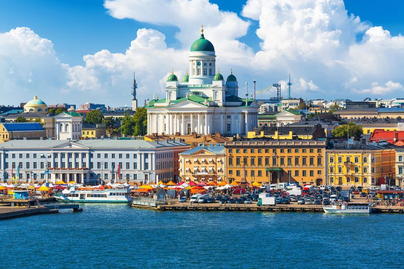
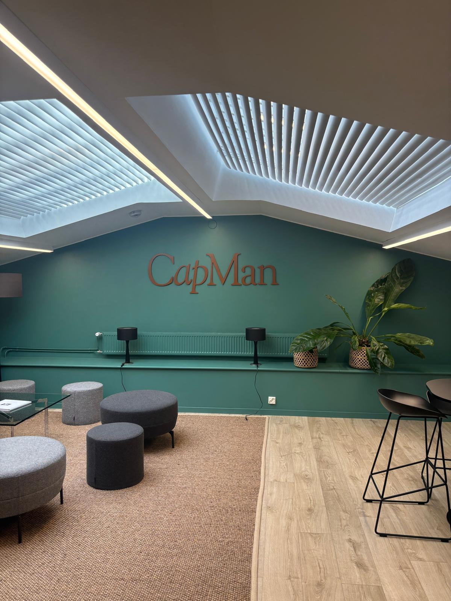
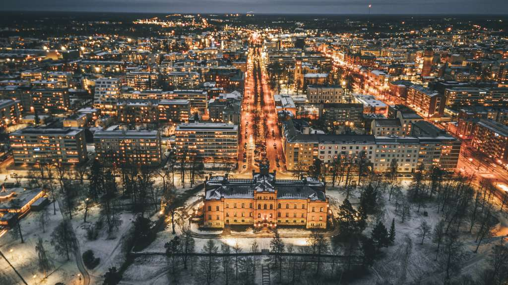

Winvest järjestää monipuolisia tapahtumia jäsenilleen — excursioista yritysvierailuihin, sijoitusiltamista vuosijuhliin. Täältä löydät tulevat tapahtumat sekä katsauksen menneisiin.
Tulevat tapahtumat
Stocks & Shots In Finnish 25.3.2026
Tule kuulemaan Suomen Osakesäästäjien toimitusjohtajan ajankohtainen katsaus osakemarkkinoihin! Illan aikana pureudutaan markkinoiden kuumimpiin puheenaiheisiin rennossa tunnelmassa — ja hintaan kuuluu alkoholitarjoilu. Tämä on tilaisuus, jota et halua missata.
Liity seuraamme ja verkostoidu samanhenkisten sijoittajien kanssa lasillisen äärellä!

Excursio Helsinki In Finnish 9.4.2026
Mandatum
Mandatumilla käsitellään markkinanäkymiä sekä sijoitustuotteita (strukturoidut, korko ja vaihtoehtoiset sijoitukset).
Danske Bank
Danske Bankilla tutustumme pankin Markets-toimintoihin, kuten Trade Financeen, Foreign Exchangeen, Equity Researchiin, Debt Capital Marketsiin sekä Corporate Lendingiin. Ohjelmaan kuuluu myös Markets-vierailu ja alumni-uratarinoita.

Finance as a Career In Finnish 16.4.2026
testi 1
testi 2

Menneet tapahtumat
Naistenpäivä x VES In Finnish 6.3.2026
Join us on 6.3. at Cella Nova for an elegant evening celebrating women. Inspiring stories, sparkling wine and light bites await in a festive dress to impress atmosphere.
Each ticket includes a surprise goodie bag for every participant.

Rookie Dinner 2026 In Finnish 3.12.2025
Perinteinen hallituksen vaihto rookie dinner järjestettiin tuttuun tyyliin fondiksella. Uudet jäsenet pääsivät tutustumaan vanhoihin hallituslaisiin ja nauttimaan hyvästä ruuasta.
Winvest Info Ilta In Finnish 11.10.2025
Infoilta järjestetään Warranttilalla 11.10. klo 17:00 alkaen. Olette kaikki lämpimästi tervetulleita!

Rookie Dinner In Finnish
testi 1
testi 2

Excursio Helsinki In Finnish 3.–4.4.2025
CapMan
CapManilla syvennymme pääomasijoittamisen maailmaan. Kuulemme, miten private equity -rahastot toimivat, miten sijoituskohteita valitaan ja miten arvoa luodaan portfolioyhtiöissä. Tilaisuus tarjoaa hyvän katsauksen vaihtoehtoisiin sijoitusluokkiin sekä uramahdollisuuksiin pääomasijoitusalalla. Illan päätteeksi CapMan tarjoaa osallistujille kevyen tarjoilun ja mahdollisuuden vapaamuotoiseen keskusteluun asiantuntijoiden kanssa.
Nordea Markets
Nordea Marketsissa tutustumme pankin pääomamarkkinatoimintaan useasta näkökulmasta. Esityksissä käsitellään strukturoituja tuotteita, valuuttamarkkinoita (FX Sales), osaketutkimusta sekä korkomarkkinoita (Fixed Income). Tilaisuus antaa kokonaiskuvan siitä, miten markkinatiimit toimivat ja millaista analyysiä ja asiakastyötä näissä rooleissa tehdään.
PYN Elite
PYN Elite on suomalainen osakerahasto, joka on keskittynyt Kaakkois-Aasian osakemarkkinoihin jo 27 vuoden ajan. Rahasto on saavuttanut vakuuttavia tuloksia pitkän sijoitushistoriansa aikana. Vierailulla kuulemme rahaston sijoitusfilosofiasta, alueen markkinamahdollisuuksista sekä siitä, miten aktiivinen salkunhoito toimii käytännössä nopeasti kehittyvillä markkinoilla.
Ilmarinen
Ilmarinen on yksi Suomen suurimmista työeläkeyhtiöistä ja merkittävä institutionaalinen sijoittaja. Vierailulla saamme katsauksen siihen, miten työeläkevaroja sijoitetaan globaalisti eri omaisuusluokkiin sekä miten pitkän aikavälin vastuullinen sijoittaminen ja riskienhallinta toteutetaan suuressa institutionaalisessa salkussa. Tilaisuus avaa myös näkymän siihen, millainen rooli eläkesijoittajilla on Suomen rahoitusmarkkinoilla.



Naisten päivä x VES In Finnish 7.3.2025
Naistenpäivän tapahtumassa puhujina olivat Laura Rahikka Hycamitelta ja Tuuli Prinkkilä Fintosista. He jakoivat ajatuksiaan yrittäjyydestä ja kertoivat omista urapoluistaan.
Excursio Helsinki In Finnish
Evli
Evlillä syvennyttiin varainhoidon ja pääomamarkkinoiden maailmaan.
Nordea
Nordealla kuultiin pankkitoiminnasta ja talouden tulevaisuuden näkymistä. Päivä huipentui verkostoitumiseen illallisen merkeissä.
Excursio Vaasa In Finnish
Vierailemme yhdessä Suomen harvoista hedge-rahastoista, Estlander & Partnersilla. Lisäksi vierailun toisessa osuudessa syvennymme rahastoyhtiöiden taustaprosesseihin Grit Fund Management Companyn kanssa.

Kylterijäiset In Finnish
Winvest löytyy Kylterijäisistä pisteeltä 17. Tervetuloa mukaan! Tarjolla on pientä visailua ja kurkun kostuketta.

Sijoittaja 2025 -messut, Helsinki In Finnish 26.11.2025
Warrantti Invest suuntasi Sijoittaja 2025 -messuille Helsingin Messukeskukseen tutustumaan sijoittamisen teemoihin, trendeihin ja ajankohtaiseen sisältöön. Tapahtuman virallinen Afterwork järjestettiin Cafe Solossa.
Päivän puhujiin lukeutuivat mm. Charly Salonius-Pasternak (Nordic West Office) geopolitiikan murroksesta, Tiina Alahuhta-Kasko (Marimekko), Petri Deryng (PYN Elite) Vietnam vs. Suomi -vertailulla, Antti Saari (Nordea) sijoittamisesta maailman myrskyissä sekä Verneri Pulkkinen (Inderes) osakemarkkinakatsauksella.

Institutional Trading and Markets In Finnish
Winvestin entinen puheenjohtaja Kare Laine saapuu Vaasaan kertomaan meille työstään Nordea Marketsilla. Kare on työskennellyt osakeoptioiden markkinatakauksessa (Equity Derivatives Trading) sekä valuuttadeskillä (FX Sales). Tapahtumassa on kahvitarjoilut.

Finance as a Career x W-capitall In Finnish 8.4.2025
Alumnitapahtuma, jossa vieraana Nordean, BDO:n ja EY:n edustajat. He jakoivat urapolkujaan, kertoivat tyypillisestä työpäivästään ja antoivat vinkkejä opintoihin sekä työnhakuun. Tapahtuman tavoitteena oli auttaa opiskelijoita hahmottamaan, millaisia urapolkuja ja työmahdollisuuksia on tarjolla laskentatoimen ja rahoituksen aloilla.
Excursio Helsinki In Finnish 17.–18.4.2024
United Bankers
United Bankersilla kuulemme heidän teemarahastoistaan, markkinanäkemyksestään sekä UB FIG Private Equity -rahastosta.
Danske Bank
Danske Bankilla meille esittäytyy Head of LC&I, joka esittelee LC&I-toimintaa Danske Bankissa. Lisäksi kuulemme kuulumisia Trade Financesta, Debt Capital Marketsista (DCM), Equity Researchista sekä valuuttatiimiltä (FX Sales).
CapMan
Vierailu huipentuu CapManilla, jossa kuulemme listaamattoman markkinan kuulumisia ja syvennymme pääomasijoittamisen maailmaan.
Winvest Info Ilta In Finnish 16.10.2024
Järjestämme Warranttilassa infoillan, jonka tarkoituksena on kertoa teille enemmän toiminnastamme ja mahdollisuuksista, joita hallituspaikka ja tapahtumiin osallistuminen voivat tarjota. Ohjelmassa virallisen osuuden lisäksi rentoa hengailua ja pientä purtavaa.
Tule mukaan tutustumaan toimintaamme ja meihin!
Syksyn Excursio Helsinki In Finnish 1.11.2024
Aktia
Aktialla kuulimme pääekonomistin ajankohtaisen katsauksen talouteen.
Suomen Pankki
Suomen Pankissa tutustuimme kultavarantoihin ja pankin toimintaan osana eurojärjestelmää. Päivä huipentui verkostoitumiseen illallisen merkeissä.

Naistenpäivä — VES & Bloom by Johanna In Finnish 8.3.2024
Naistenpäivää juhlittiin yhdessä VES:in ja Bloom by Johannan kanssa! Tapahtuman puhujina olivat kauneusalan verkkokauppa Bloom by Johannan perustanut Johanna Tähtinen sekä naisyrittäjyyttä paljon tutkinut Sami Vähämaa. Illan ohjelmaan kuului myös tarjoiluja, musiikkia ja yhteistä hengailua naistenpäivän kunniaksi.
Teemailta: Kryptovaluutat — Coinmotion In Finnish 26.3.2024
Teemailta kryptovaluutoista Coinmotionin Partner Manager Pessi Peuran kanssa. Coinmotion on Pohjoismaiden johtava kryptovaluuttojen palveluntarjoaja, joka keskittyy kryptovaluuttojen vaihtoon, säilytykseen ja varainhoitoon. Yrityksellä on yli 120 000 asiakasta, ja se on perustettu vuonna 2012.

Teemailta: Asuntosijoittaminen In Finnish 20.2.2024
Teemailta asuntosijoittamisesta alumnimme, Suomen vuokranantajat ry:n ekonomistin Eemeli Karlssonin johdattelemana. Eemeli kertoi asuntosijoittamisesta ja asuntomarkkinoista sekä uramahdollisuuksista valmistumisen jälkeen.